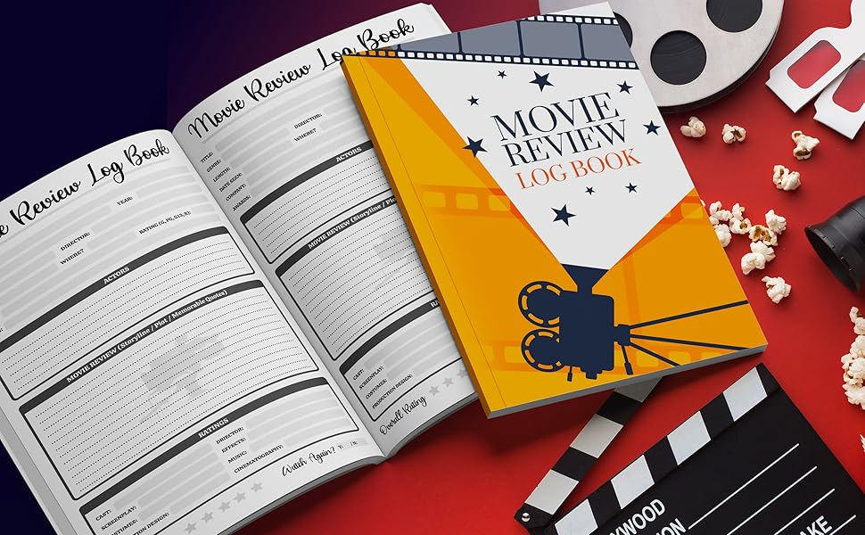
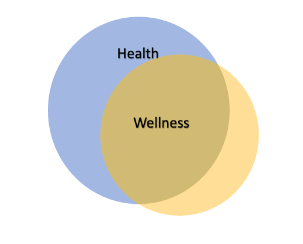
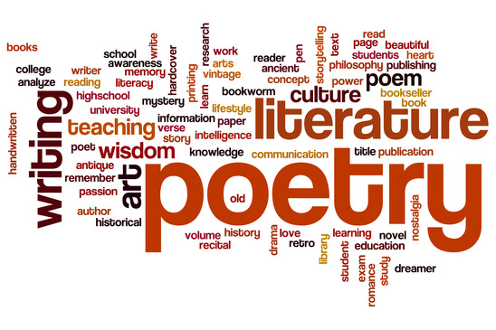

New
Personal Reflections and Growth
The past year has been one of reflection, growth, and transformation. It hasn’t always been easy, but looking back, I realize how much I’ve changed. Here are five key ways I’ve grown:
1. Improved Emotional Awareness
One of my biggest lessons has been understanding my emotions. Instead of suppressing feelings, I’ve learned to acknowledge them and process them healthily. This has helped me navigate stress and anxiety much more effectively.
2. Embraced Consistency
I used to believe that productivity came from bursts of motivation. This year, I learned that consistency is key. I’ve committed to small daily habits—whether it’s journaling, exercising, or reading—that, over time, have built lasting progress.
3. Set Boundaries
I’ve become more protective of my time and energy. By setting clear boundaries, I’ve made room for the things and people that truly matter, while reducing burnout.
4. Focused on Self-Care
Self-care isn’t just about pampering; it’s about nurturing my mental and physical health. This year, I prioritized regular exercise, meditation, and taking time off when needed.
5. Embraced Chang
Lastly, I’ve become more open to change. Instead of resisting it, I’ve learned to view it as an opportunity for growth. Change isn’t always easy, but it’s a constant that brings new possibilities.
Travel . Events
June 24, 2020
36 comments
by Admin Nat
New
Travel Diaries
oXtra Blog 1. [Hidden Café/Restaurant Name]
Nestled in an unassuming alley, this café was a cozy haven away from the crowds. With its rustic charm and locally sourced menu, it quickly became my favorite place to relax. The coffee here was rich, and the staff made me feel like I was part of the family.
2. [Off-the-Path Landmark or Park Name]
While most visitors head to the main attractions, I took a different route and discovered this peaceful park. With its tranquil atmosphere and stunning views, it felt like a world away from the bustling city. It’s perfect for a quiet afternoon picnic or a leisurely walk.
3. [Local Artisan Market or Boutique]
Tucked away from the main shopping streets, this market offered handmade goods and unique souvenirs. I found a beautiful handcrafted scarf that became a cherished memento of my trip.
Creative . Design . Business
June 16, 2020
48 comments
by Admin Sam

Book and Movie Reviews
Reading has always been a gateway to new perspectives, and over the years, there have been several books that have deeply impacted how I see the world. Here are five that have transformed my thinking:
1. "The Power of Now" by Eckhart Tolle
This book taught me the importance of living in the present moment. It helped me understand that anxiety often stems from dwelling on the past or worrying about the future, and that peace can be found in simply being.
2. "Sapiens: A Brief History of Humankind" by Yuval Noah Harari
This book reshaped how I think about human history and our place in the world. Harari’s exploration of the evolution of humanity opened my eyes to the complexity of our societies and the forces that shape them.
Music . Audio
June 11, 2020
24 comments
by John Walker
Productivity and Time Management Tips
Staying organized in today’s fast-paced world can be challenging, but it’s essential for achieving my goals. One tool that has truly transformed how I manage my time is [Tool/App Name]. Here’s how I use it to stay on track:
1. Task Lists
I start my day by creating a list of tasks I want to accomplish. [Tool/App Name] allows me to break tasks into categories and prioritize them, ensuring that nothing important falls through the cracks.
2. Time Blocking
One of the key features I love is the ability to schedule specific time slots for tasks. By blocking time for deep work and avoiding distractions, I’m able to focus on one task at a time, rather than jumping between projects.
Artworks . Design
June 4, 2020
72 comments
by Admin Sam

Health and Wellness
Working from home has its perks, but it can also be a challenge when it comes to staying active. Without a commute or a set routine, it’s easy to become sedentary. Here are a few strategies that help me stay active while working remotely
Creative . Video . Audio
May 31, 2020
84 comments
by Admin Sam

Creative Writing or Poetry
Writing has always been a way for me to express emotions and connect with others on a deeper level. This poem is a reminder that even in the harshest seasons, there is always hope for renewal. Whether through poetry, storytelling, or reflection, creativity has the power to transform both the writer and the reader
Visual . Artworks
June 16, 2020
96 comments
by Omer Esamaldin